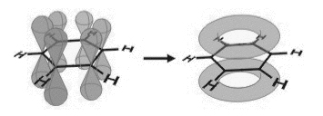
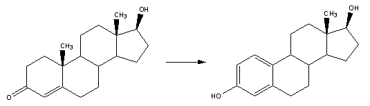
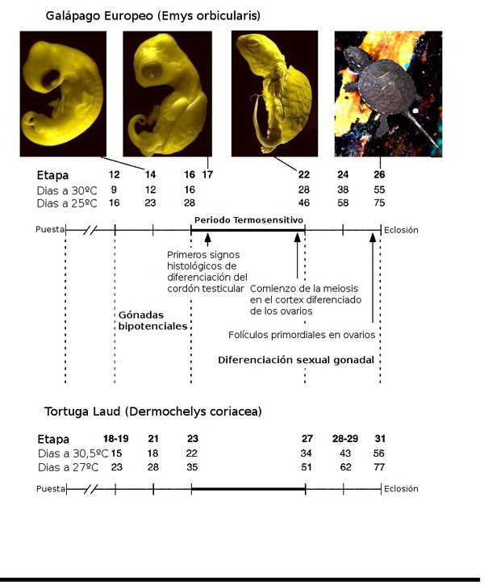

|
TSD: INFLUENCIA DE LA TEMPERATURA EN LA DIFERENCIACI�N DE LAS
G�NADAS EN EMBRIONES DE TORTUGA.
Txema L�pez, 2007
En un art�culo ya publicado
con anterioridad en Testudinae.com,
desgran�bamos c�mo las causas ambientales influ�an en la
diferenciaci�n sexual de los reptiles ov�paros en general y de las
tortugas en particular. Vimos que la mayor�a de las tortugas
mostraban diferenciaci�n sexual por
temperatura (TSD),
y algunas pocas especies,
diferenciaci�n gen�tica (GSD)
al estilo de los mam�feros, pero con mecanismos mucho m�s primitivos.
Esta diferenciaci�n de las g�nadas, bien en ovarios o test�culos,
tiene lugar durante la primera mitad del primer tercio de la
incubaci�n, un periodo cr�tico dentro del desarrollo embrionario
denominado periodo termosensitivo
(TSP).
Varios tratamientos realizados al embri�n durante el TSP han
demostrado la implicaci�n de los
estr�genos en la diferenciaci�n
gonadal. Los estr�genos son hormonas sexuales de tipo femenino
producidos por los ovarios y, en menores cantidades, por las gl�ndulas
adrenales. Los estr�genos
inducen fen�menos de proliferaci�n celular sobre los �rganos diana,
por lo que un tratamiento con estr�genos ex�genos de un embri�n a
temperatura de incubaci�n de machos da lugar a la diferenciaci�n
ov�rica, produciendo, por tanto, hembras, mientras que un tratamiento
con antiestr�genos o inhibidores de la
aromatasa da
lugar a la diferenciaci�n testicular a temperatura de incubaci�n de
hembras. La aromatasa
es una enzima de la superfamilia del Citocromo P450, cuya funci�n es
aromatizar andr�genos (hormonas masculinas) selectivamente. Una
enzima es un biocatalizador, es decir, una substancia que permite
reacciones qu�micas complejas a temperatura ambiente y presi�n
atmosf�rica, las llamadas condiciones vitales. La
aromatizaci�n es
una reacci�n qu�mica consistente en crear un ciclo arom�tico, donde
las mol�culas de carbono se unen formando enlaces dobles y simples
alternativamente, d�ndose un fen�meno de resonancia, es decir,
cre�ndose una zona de libre circulaci�n de electrones entre los �tomos
de carbono del ciclo, en una mol�cula susceptible de tenerlo. El
benceno es una mol�cula arom�tica simple donde ocurre este fen�meno:

1.
Mol�cula de benceno, mostrando la disposici�n de los orbitales P del
carbono, de tal manera que existe una zona de libre circulaci�n de
electrones a lo largo de todo el ciclo.

2. Reacci�n de aromatizaci�n de la testosterona
(andr�geno) en estradiol (estr�geno) catalizada (causada) por la
aromatasa.
Se han realizado una serie
de estudios buscando contenido de estr�genos, actividad de aromatasa y
expresi�n g�nica de la aromatasa en los complejos GAM
(gonadal/adrenal/meson�frico) (zona de tejido que debe diferenciarse)
durante el desarrollo embrionario de tortugas y cocodr�lidos. En s�lo
uno de esos estudios se encontraron diferencias entre temperaturas de
generaci�n de macho y de hembra durante el TSP. En otros estudios, se
encontraron diferencias al final del TSP o no fueron encontradas
durante y despu�s del TSP. Por tanto, muchos autores determinaron que
los estr�genos no estaban implicados de manera alguna en los estadios
m�s tempranos de la diferenciaci�n ov�rica. Otros autores infirieron
que la temperatura influye en tejidos extragonadales, en particular el
adrenal y/o el meson�frico, ya que estos tejidos pueden ser el origen
de los estr�genos que act�an en la diferenciaci�n de las g�nadas.
Pieau y Dorizzi analizaron datos provenientes �nicamente de las
g�nadas, en particular de gal�pagos y tortugas marinas, en las que no
hay implicaci�n de tejidos extragonadales. Este an�lisis concluy� que:
-
La temperatura
influye directamente en la diferenciaci�n sexual de las g�nadas.
-
Durante el TSP, la
actividad de la aromatasa en las g�nadas depende de la temperatura
de incubaci�n de los huevos.
-
Los estr�genos son
sintetizados en las g�nadas durante el TSP y que esa s�ntesis
depende de la temperatura.
-
Los estr�genos act�an
tanto en la parte cortical de las g�nadas como en la medular.
Con todos estos datos, se
puede inscribir la TSD en un concepto m�s amplio, el de la
diferenciaci�n sexual gonadal. Podemos ir analizando y razonando cada
uno de esos puntos, no sin antes repasar los eventos clave del
desarrollo embrionario de una tortuga. Para facilitar la comparaci�n
en el desarrollo embrionario de las diferentes especies,
particularmente para la familia
Emydinae, existe un esquema estandar
de 27 etapas en el desarrollo embrionario, inicialmente presentado
para Trachemys scripta (Greenbaum,
2002). Las primeras etapas son
pr�cticamente iguales para todos los taxones de tortugas, y s�lo hay
cambios significativos entre las etapas 12 y 26. No vamos a entrar en
profundidad a enumerar las diferentes etapas del desarrollo,
simplemente comentaremos que la definici�n de cada etapa est� basada
en el desarrollo de los miembros delanteros y la garras del embri�n en
formaci�n, y que la primera clasificaci�n de este tipo se hizo para
Chelydra serpentina
en un trabajo de Yntema (1968).
En los art�culos comentados en la
revisi�n de Pieau y Dorizzi la mayoria de los datos vienen de estudios
realizados en Emys orbicularis (gal�pago europeo), Lepidochelys
olivacea (tortuga golfina) y Dermochelys coriacea (tortuga laud). En
el siguiente gr�fico ilustramos los principales eventos morfol�gicos
que tienen lugar en el desarrollo de Emys orbicularis:

3. Etapas
principales de la diferenciaci�n de g�nadas en relaci�n con la edad y
etapa del desarrollo embrionario de Emys orbicularis, comparadas con
las de Dermochelys coriacea, seg�n Renous et al.(1989) y Desvages et
al. (1993).
La temperatura
pivotal de esta especie es de 28,5�C, con lo que, a una temperatura de
25�C obtendr�amos un 100% de machos y a 30�C un 100% de hembras. El
TSP se extiende entre las etapas 16 y 22. Antes de llegar a este
punto, las g�nadas son indiferentes, o dicho de otra manera,
bipotenciales. Est�n compuestas de
epitelio germinal . El
epitelio es el
tejido formado por una o varias capas de c�lulas yuxtapuestas que
constituyen el recubrimiento interno de las cavidades, �rganos huecos,
conductos del cuerpo y la piel y que tambi�n forman las mucosas y las
gl�ndulas. Los epitelios tambi�n forman el par�nquima de muchos
�rganos, como el h�gado. El epitelio germinal es el que forma la l�nea
germinal. La l�nea germinal
o estirpe germinal
es el conjunto de c�lulas localizadas en las g�nadas, que se
convierten en gametos (�vulos y espermatozoides) a trav�s de una
divisi�n celular que s�lo ocurre en las g�nadas que es la meiosis. En
la parte interior, sin embargo, est�n compuestas por finos cordones de
c�lulas epiteliales, los llamados �cordones
sexuales�, entre
tejido mesenquimal
(El tejido mesenquimal, gen�ricamente denominado mes�nquima es el
tejido del organismo embrionario, de tipo conjuntivo laxo: con una
abundante matriz extracelular, compuesta por fibras delgadas y
relativamente pocas c�lulas, aunque la celularidad es muy variable). A
25�C, los primeros signos histol�gicos (relativo a los tejidos) de
diferenciaci�n de los cordones
testiculares, los futuros cordones semin�feros aparecen en la
etapa 17. Durante el TSP, el epitelio germinal se aplana, y las
c�lulas germinales lo abandona para migrar entre las c�lulas
epiteliales de los cordones testiculares. A 30�C, cuando se
diferencian las c�lulas femeninas, durante el TSP los cordones
sexuales se vuelven finos, aparecen fragmentados o evolucionan como
peque�as lacunae
(del latin lacuna,
en histolog�a, un peque�o espacio), mientras que el epitelio germinal
se transforma en c�rtex ov�rico, cuyo desarrollo es principalmente
debido al desarrollo in situ de c�lulas germinales. Al final del TSP,
algunas c�lulas germinales entran en proceso de
meiosis. En
biolog�a, meiosis
(proviene del lat�n �hacer mas peque�o�) es un proceso divisional
celular , en el cu�l una c�lula diploide (2n), experimentar� dos
divisiones celulares sucesivas, con la capacidad de generar cuatro
c�lulas haploide (n).
Este proceso se
lleva a cabo en dos divisiones nucleares y citoplasm�ticas, llamadas,
primera y segunda divisi�n mei�tica o simplemente Meiosis I y Meiosis
II. Ambas comprenden Profase, Metafase, Anafase y Telofase. Durante la
meiosis I los miembros de cada par hom�logo de cromosomas se unen
primero y luego se separan y se distribuyen en diferentes n�cleos. En
la Meiosis II, las crom�tidas hermanas que forman cada cromosoma se
separan y se distribuyen en los n�cleos de las c�lulas hijas. Entre
estas dos etapas sucesivas no existe la etapa S (duplicaci�n del ADN).
Los errores en la
meiosis son responsables de las principales anomal�as cromos�micas. La
meiosis consigue mantener constante el n�mero de cromosomas de las
c�lulas de la especie para mantener la informaci�n gen�tica.
1. La
temperatura influye directamente en la diferenciaci�n sexual de las
g�nadas.
El efecto directo
de la temperatura en la formaci�n de las g�nadas se demostr� por
experimentos llevados a cabo in vitro con la tortuga golfina,
Lepidochelys olivacea.
Los huevos incubados a 26�C dan lugar a machos y los incubados a 33�C
resultan ser hembras. La masculinizaci�n de las g�nadas fue
caracterizada por la expresi�n g�nica
de la prote�na SOX9 durante el
desarrollo embrionario normal. Entre las etapas 21 y 24 del desarrollo
embrionario, la SOX9 se expresa a ambas temperaturas en las g�nadas,
que permanecen en estado bipotencial. Posteriormente, SOX9 sigue dando
positivo a 26�C en los cordones medulares de las g�nadas masculinas ya
diferenciadas. Este comportamiento se observa tanto en ensayos
in ovo (dentro
del huevo) como in vitro
(tejido gonadal artificialmente propagado). La
expresi�n g�nica
es el proceso por medio del cual todos los organismos procariotas y
eucariotas transforman la informaci�n codificada en los �cidos
nucleicos en las prote�nas necesarias para su desarrollo y
funcionamiento. En todos los organismos, inclusive los eucariotes el
contenido del ADN de todas sus c�lulas es id�ntico. Esto quiere decir
que contienen toda la informaci�n necesaria para la s�ntesis de todas
las prote�nas. Pero no todos los genes se expresan al mismo tiempo ni
en todas las c�lulas. Hay s�lo un grupo de genes que se expresan en
todas las c�lulas del organismo y codifican para prote�nas que son
esenciales para el funcionamiento general de las c�lulas y son
conocidos como "housekeeping genes". El resto de los genes se expresan
o no en los diferentes tipos de c�lulas, dependiendo de la funci�n de
la c�lula en un tejido particular. Por ejemplo, genes que codifican
prote�nas responsables del transporte axonal se expresan en neuronas
pero no en linfocitos en donde se expresan genes responsables de la
respuesta inmune. Tambi�n existe especificidad temporal, esto quiere
decir que los diferentes genes en una c�lula se encienden o se apagan
en diferentes momentos de la vida de un organismo. Adem�s, la
regulaci�n de los genes var�a seg�n las funciones de �stos. De alguna
manera, pues, la temperatura influye en la expresi�n de la SOX9, y por
tanto muestra el claro efecto de �sta en la diferenciaci�n sexual de
las g�nadas.
2. Durante el
TSP, la actividad de la aromatasa en las g�nadas depende de la
temperatura de incubaci�n de los huevos.
Como antes
dec�amos, la aromatasa es el complejo enzim�tico que transforma los
andr�genos en estr�genos. En diversos experimentos se midi� la
actividad de la aromatasa en las g�nadas, separadas de los complejos
GAM de las especies Emys orbicularis
y Dermochelys coriacea.
En el primer caso, se midi� a 25�C y a 30�C. Al principio del TSP, la
actividad de la aromatasa es muy baja en ambos casos, pero era algo
superior a 30�C. Sin embargo, a medida que avanza el TSP la actividad
de la aromatasa crece exponencialmente, alcanz�ndose un pico al final
del desarrollo embrionario dando como resultado la diferenciaci�n del
tejido y la formaci�n de ovarios. Se observ� tambi�n que la actividad
de la aromatasa a la temperatura pivotal de 28,5�C en
testes y
ovotestes (testes
es el plural de testis,
test�culo en lat�n ) era algo superior que la observada en test�culos
a 25�C e inferior en ovarios a 30�C. Sin embargo, estas condiciones
ideales en que la temperatura se mantiene durante el TSP son poco
dadas a ocurrir en la naturaleza. �Qu� ocurre si invertimos la
temperatura de incubaci�n de embriones de macho a hembra y de hembra a
macho? Hecho el experimento en diferentes estadios del TSP, un aumento
o un descenso de la temperatura se traduc�a en un aumento o descenso
simult�neo de la actividad de la aromatasa. Los cambios inducidos
despu�s del TSP no produc�an efecto alguno. Adem�s, los experimentos
demostraron que la temperatura act�a sobre la regulaci�n s�ntesis de
la aromatasa y no sobre la propia actividad de la prote�na.
Resultados similares se obtuvieron para
Dermochelys coriacea,
para la que un cambio de 27�C a 35�C durante la incubaci�n, que tuvo
lugar a 27�C entre las etapas 22 y 29, y luego a 35�C durante 6
d�as, produjo cambios importantes en la actividad de la aromatasa
s�lo entre las etapas 23 y 27. En el caso de
Lepidochelys olivacea,
se observaron cambios en la expresi�n de la prote�na SOX9 durante ese
mismo periodo. Por tanto, el periodo sensible a los cambios de
temperatura que induce cambios en la actividad gonadal de la aromatasa
en la tortuga la�d, y la expresi�n de la prote�na SOX9 en la tortuga
golfina coincide con el TSP para la diferenciaci�n sexual de las
g�nadas en el gal�pago europeo.
3. Los
estr�genos son sintetizados en las g�nadas durante el TSP y esa
s�ntesis depende de la temperatura.
Ya desde una
etapa muy temprana, se observa que la esteroidogenesis comienza muy
pronto en el desarrollo embrionario. Esto es muy importante, puesto
que tanto los estr�genos como los andr�genos son de naturaleza
esteroidea. Esto ocurre para
Emys orbicularis
a partir de la etapa 15, antes del TSP, donde ya se observa actividad
de la 3β-HSD,
una enzima que act�a sobre los esteroides. Esta hormona tiene en esta
etapa m�s actividad a temperatura de producci�n de machos. Dado que
las g�nadas sintetizan estr�genos tan pronto como al principio del TSP,
y la s�ntesis de estos depende de la temperatura durante este periodo,
se puede inferir que s�lo los estr�genos generados en las g�nadas (de
origen end�geno,
no como los generados en el cerebro o los contenido en la yema del
huevo, de origen ex�geno)
act�an en la TSD.
4.Los estr�genos
act�an tanto en la parte cortical de las g�nadas como en la medular.
Para los reptiles
en general, al final del desarrollo embrionario el epitelio
superficial de los testes
es muy fino, pero pueden quedar restos de epitelio germinal, quedando
por tanto c�lulas germinales en �l. El tratamiento con estr�genos de
tortugas juveniles o reci�n nacidas (Malaclemys
terrapin, Risley 1941,
Mauremys leprosa,
Vivi�n y Stefan 1958) induce la proliferaci�n y entrada en meiosis de
esas c�lulas germinales, produci�ndose el desarrollo de c�rtex
ov�rico a partir del epitelio germinal, siendo este proceso controlado
por estr�genos. Sin embargo, este proceso no destruye los cordones
testiculares de la parte medular de las g�nadas.
En la �poca del
descubrimiento de la TSD, se hicieron experimentos inyectando
estr�genos a temperatura de producci�n de machos en huevos de
Testudo graeca
y Emys orbicularis,
observ�ndose la inhibici�n del desarrollo de los cordones
testiculares a etapas tempranas del desarrollo. Esa inhibici�n es
proporcional a la dosis de estr�genos inyectada. En todos los casos se
formaba c�rtex ov�rico, lo cual no quiere decir que se formasen
ovarios completos y funcionales en todos los casos (en muchas
ocasiones se observaban hipoovarios u ovotestes). El periodo durante
el cual este tratamiento es efectivo coincide con el TSP.
Tambi�n se han
realizado los experimentos contrarios, suministrar antiestr�geno o
inhibidores de la aromatasa a temperatura de producci�n de hembras.
Los tratamientos con Tamoxifen, un antiestr�geno en
Emys orbicularis,
y con los inhibidores de la aromatasa Fadrozol o Letrozol en
Emys orbicularis, Trachemys scripta y
Chelydra serpentina,
dieron como resultado la diferenciaci�n de los cordones testiculares
en g�nadas masculinas a temperatura de producci�n de hembras. Incluso
despu�s del TSP, el tratamiento con Letrozol funciona con el gal�pago
europeo, pero menos efectivamente.
Conclusi�n
Tomando todo esto
en cuenta, para todos los reptiles que muestran TSD, las g�nadas son
las que sufren los efectos de la temperatura para que se produzca la
diferenciaci�n sexual, y son el lugar donde tiene lugar la acci�n de
la aromatasa y de la s�ntesis de estr�genos durante el TSP. La
s�ntesis de los estr�genos gonadales depende de la temperatura de
incubaci�n. A temperaturas de producci�n de hembras, a etapas
tempranas del TSP los estr�genos end�genos act�an tanto en la parte
medular como en la cortical de la g�nada para producir la
diferenciaci�n sexual de los ovarios.
La
termosensibilidad en la diferenciaci�n sexual de las g�nadas se ha
observado tambi�n en peces y en anfibios, no s�lo en reptiles. En
estas especies no se distinguen cromosomas mit�ticos sexuales
por m�todos cl�sicos, sin embargo su detecci�n es posible, y eso
implica que los efectos de la temperatura se imponen a la
determinaci�n gen�tica del sexo (GSD).
Bibliograf�a
Greenbaum, E. Can.
J. Zool. 80(8):
1350�1370 (2002)
Pieau, C., Dorizzi,
M. Journal of Endocrinology 181:
367-377 (2004)
Torres
Maldonado, L.C., Merchant Larios, H., Ciencia ergo Sum
13(2):176-182
(2006)
Wikipedia (http://www.wikipedia.org)
|